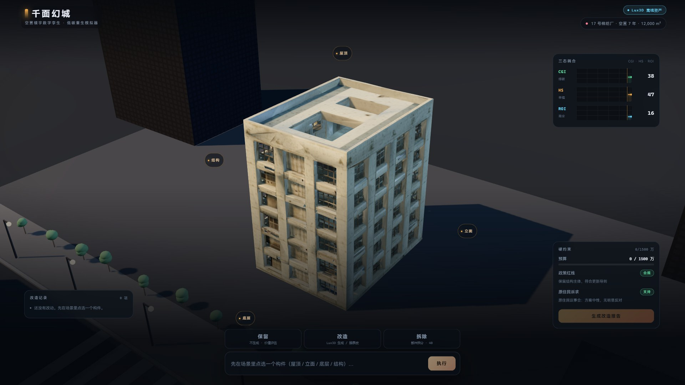
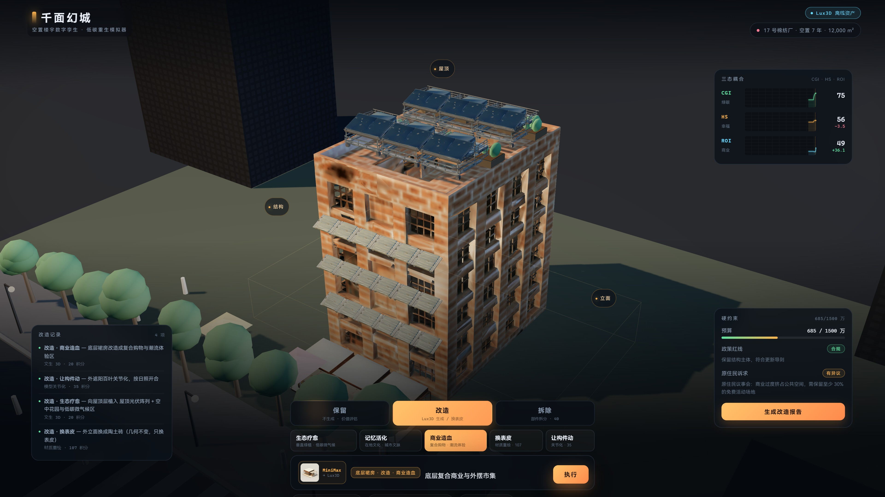

千面幻城AHOLO LUX3D · 路演现场
v2 · 能力高亮版
空置楼宇数字孪生与低碳重生模拟器
点选构件，
看见改造的三态代价。
一栋空置七年的纺织厂。立面、屋顶、底层、结构，每一处处置都会同时拉动绿碳、幸福感与商业活力。
◆Powered by Aholo 3D · Lux3D每一步都标出这次用的是哪种 3D 能力
材质重绘文生 3D关节化部件拆分 · 近似

同一视角 · 四步构件级处置
四步处置之后的真实轨迹：绿碳涨了，幸福感涨得慢，商业活力先掉后回升——因为它们互相扣分。
怎么玩 3 STEPS
-
01
点构件
在场景里直接点 立面 / 屋顶 / 底层 / 结构，整栋楼被选中，只有那一处高亮。
-
02
选处置
只有三种：保留 / 改造 / 拆除。改造再选方向——换表皮、生态疗愈、商业造血、记忆活化、让构件动。
-
03
看三态
右上角三条曲线同时动：绿碳、幸福感、商业活力。每次决定都看得见代价，最后可生成复盘报告。
Aholo 3D · Lux3D · 四种能力 4 CAPABILITIES
demo 底部常驻一条 Aholo 3D · Lux3D 能力条：每选一次处置，都会亮出这次实际调用的是哪一种能力；改造记录里也逐条标出来源。
-
01
材质重绘 实机跑通
在 demo 里点 立面 → 改造 → 换表皮，看这条细条变成「材质重绘」。
几何一点没变，只换表皮——不是重新建模。
-
02
文生 3D 实机跑通
点 屋顶 / 底层 / 屋面 → 改造 → 生态疗愈 · 记忆活化 · 商业造血，细条变成「文生 3D」。
新构件（光伏、花园、商业亭）是生成出来的，不是贴图。
-
03
关节化 实机跑通
点 立面 → 改造 → 让构件动，细条变成「关节化」，百叶会绕水平轴开合。
只消费 URDF 的关节轴与限位，浏览器里没做完整装配。
-
04
部件拆分 近似 · 未接真接口
点 结构 → 拆除，细条变成「部件拆分（近似）」。
本版是「构件分组 + 射线拾取」的近似，不是 part-split 的真实拆分产物。
口径：四种能力中三种实机跑通，部件拆分用近似实现。不说「四种全部跑通」。
改造前后 SAME VIEW
改造前 · 0 次处置

改造后 · 4 次处置
现场扫码 PUBLIC URL
v2 · Aholo 3D · Lux3D 能力高亮版
https://yhyu13.github.io/aholo-qianmian-demo/
手机扫码打开本页；进 demo 后底部会常驻一条能力条，标出这次用的是哪种 3D 能力。
下载品牌二维码卡片（转发 / 打印）
这次交付的是什么 HONEST
-
A
七件资产，七个真实 taskId
全部由 Aholo 3D · Lux3D 生成，可回查请求体与产物字节，不是渲染图。
-
B
四种能力中三种实机跑通
换表皮、生成新构件、关节化已跑通；部件拆分用构件分组 + 射线拾取近似，未接真接口。
-
C
三态权重是设计值
0.34 / 0.33 / 0.33 与各条耦合系数没有做过校准或对照实验；资产是教学示意，不是测绘成果。